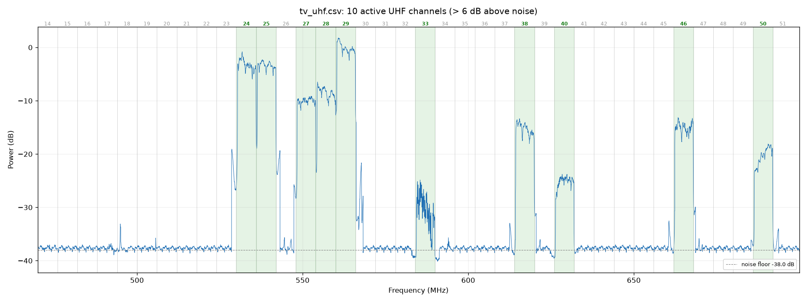

4. Digital TV (ISDB-Tb): mapping the UHF channels
What you can and cannot do
| Possible with the V4L? | |
|---|---|
| See the channels in the spectrum and measure their strength | Yes |
| Find out which physical channels are active in your area | Yes (this procedure) |
| Watch the picture | No |
Why you cannot watch the picture:
- Bandwidth. Chile uses ISDB-Tb, with 6 MHz channels and a 5.57 MHz signal. The V4L sees at most about 2.4 MHz at a time.
- The chip. The RTL2832U's built-in TV mode is DVB-T, the European standard, which is incompatible with ISDB-Tb. That mode was also replaced by WinUSB when the SDR driver was installed.
- The practical alternative: to watch TV on the PC, use a USB ISDB-T tuner.
What a digital channel looks like in SDR#: a flat plateau with very sharp edges and small peaks on top (the TMCC/AC pilot carriers).
The channel formula
UHF channel n (14 to 51) occupies:
start = 470 + 6·(n − 14) MHz end = start + 6 MHz
signal center = start + 3 + 1/7 MHz (ISDB-Tb is offset by +143 kHz)
Example, channel 24: it spans 530 to 536 MHz and the signal is centered at 533.143 MHz. The 1seg segment (the mobile version, about 430 kHz wide) sits right at that center.
Step 1: close SDR# and SDR++
Step 2: sweep from 470 to 700 MHz (2 minutes)
From the project folder:
drivers/rtlsdrblog-V1.4.0/x64/rtl_power.exe -f 470M:700M:50k -g 12.5 -c 25% -i 10 -e 2m scans/tv_uhf.csv
| Option | Why |
|---|---|
-f 470M:700M:50k |
The whole UHF TV band (channels 14–51), with 50 kHz resolution |
-g 12.5 |
Moderate gain. The channels from Santiago's hilltop transmitters arrive strong. If the noise floor shows steps, go down to -g 8.7 |
-c 25% |
Discards the edges of each hop |
-e 2m |
About 12 full sweeps, enough to average |
Step 3: detect the channels
python tools/canales_tv.py scans/tv_uhf.csv 6
- What it does: checks channels 14 to 51 and marks a channel as active when its central power is more than 6 dB above the noise floor (the last argument).
- What it creates: the plot
scans/tv_uhf_canales.png(active channels in green) and a table. Add--ento get a copy with English labels,scans/tv_uhf_canales_en.png. - The "Forma" (shape) column: tells whether the channel has the flat plateau with sharp edges typical of ISDB-Tb, or is irregular.
Result from 2026-10-02, 19:10 (Santiago, indoor dipole, 12.5 dB gain)

| Channel | MHz | Above noise | Shape | Comment |
|---|---|---|---|---|
| 29 | 560–566 | +37.7 dB | plateau | The strongest |
| 24 | 530–536 | +34.8 dB | plateau | The one I saw in SDR# (edge at 530.36 MHz) |
| 25 | 536–542 | +34.8 dB | plateau | Right next to 24 |
| 28 | 554–560 | +29.8 dB | plateau | |
| 27 | 548–554 | +28.1 dB | plateau | |
| 38 | 614–620 | +23.0 dB | plateau | |
| 46 | 662–668 | +22.9 dB | plateau | |
| 50 | 686–692 | +18.0 dB | tilted plateau | The tilt is usually caused by multipath: reflections off buildings and hills |
| 40 | 626–632 | +13.3 dB | plateau | |
| 33 | 584–590 | +7.9 dB | irregular | Weak and changing. It may be a distant channel with fading, or a different kind of signal |
How to read the plot:
- The thin peaks right next to the strong channels (for example at 528, 547 and 567 MHz)
are not channels. They are sweep artifacts: images and hop edges from
rtl_powerwhen a very strong signal is nearby. - The physical channel number (24, 29...) is not the virtual number the TV shows (for example 7.1 or 13.1). To find out which station it is, check the TV's signal information menu, which usually shows the physical UHF channel.
Step 4 (optional): look at a channel in an SDR program
- Tune to the signal center: start + 3.143 MHz. For example, 563.143 MHz for channel 29.
- Set the Sample Rate to 2.4 MSPS and RF Gain to 0–10 dB. Strong channels overload easily.
- You will see the central part of the plateau. To see an edge, shift the frequency by about ±2.5 MHz.
Repeat it to compare
- A different antenna position: save each sweep under a different name, for example
scans/tv_ventana.csv(window) orscans/tv_exterior.csv(outdoors). That way you can compare how many dB you gain. - VHF channels (7–13, 174–216 MHz): change the range to
-f 174M:216M:50k. The automatic table only covers UHF, but thegraficar_power.pyplot works the same.